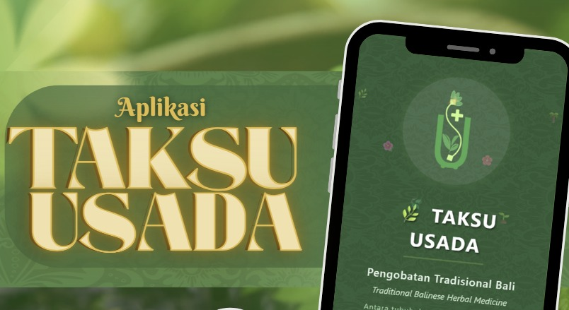
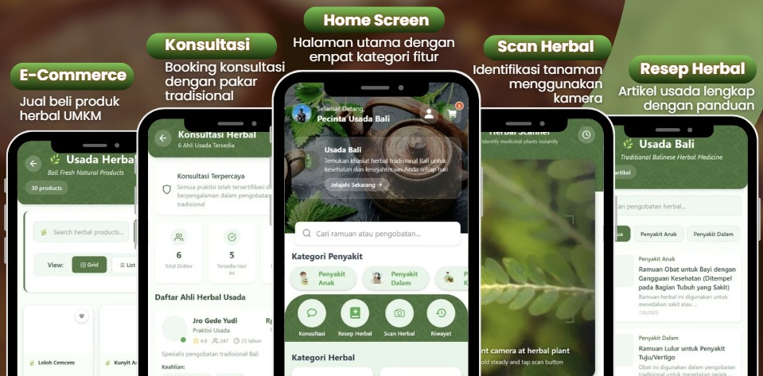
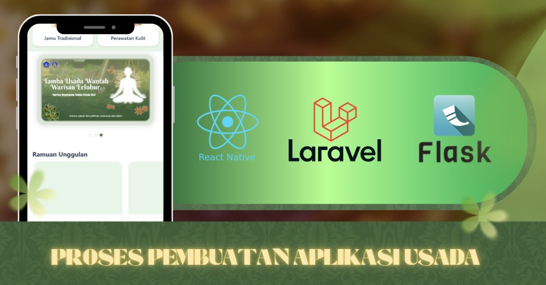

Transformasi Digital Usada Bali
Aplikasi mobile inovatif yang mendigitalisasi warisan pengobatan tradisional Bali (Usada Bali) menjadi platform edukatif dan interaktif berbasis teknologi modern. Dikembangkan menggunakan React Native dan Laravel untuk menjembatani pengetahuan herbal leluhur dengan kebutuhan masyarakat masa kini.
Scan Herbal
Melalui fitur Scan Herbal, pengguna cukup mengarahkan kamera ke tanaman herbal untuk mengenali jenis dan manfaatnya secara instan.
Konsultasi
Fitur Konsultasi menghubungkan pengguna dengan ahli herbal Usada Bali untuk layanan personal dan holistik, pengguna dapat memilih praktisi dan mengatur jadwal.
Artikel Usada
Fitur Artikel menjadi pusat pengetahuan Taksu Usada, menyediakan resep dan informasi pengobatan tradisional Bali yang diwariskan turun-temurun.
E-Commerce
Fitur Marketplace memudahkan pembelian produk herbal Bali sekaligus memberdayakan petani dan produsen lokal dengan sistem pembayaran dan pelacakan yang aman.
Pendiri Taksu Usada
🌿 Inovasi Taksu Usada
Inovasi ini merupakan upaya pelestarian budaya guna mendukung inovasi layanan kesehatan berbasis etnomedicine. Dengan menggabungkan teknologi modern seperti AI dan Mobile Development, kami menciptakan jembatan antara wisdom tradisional dan kebutuhan digital masa kini.
Tim Pengembang
Sinergi Tim Pengembang
Ketiga pilar pengembang ini bekerja secara kolaboratif untuk menghadirkan platform yang tidak hanya canggih secara teknologi, tetapi juga berkelanjutan secara bisnis dan memastikan Taksu Usada tumbuh menjadi solusi kesehatan tradisional yang relevan di era digital.
Mengenal Platform Taksu Usada

Pengenalan Aplikasi
Gambaran umum tentang fitur-fitur utama Taksu Usada dan cara kerja aplikasinya.
Tonton Video
Demonstrasi Fitur
Penjelasan fitur Taksu Usada yang menggabungkan kearifan lokal & teknologi.
Tonton Video
Media Sosial
Mengenal tentang aplikasi Taksu Usada sebagai platform e-commerce Usada Bali.
KunjungiDownload Aplikasi
Ikuti langkah-langkah berikut untuk mengunduh dan menginstal aplikasi Taksu Usada dari Google Drive:
Klik Link Download
Klik tombol download di bawah untuk mengakses file aplikasi di Google Drive.
Buka Google Drive
Link akan membawa Anda ke halaman Google Drive tempat file aplikasi tersimpan.
Pilih File APK
Temukan file APK Taksu Usada di dalam folder Google Drive dan klik untuk membuka opsi download.
Download File APK
Klik ikon download di Google Drive untuk mengunduh file APK ke perangkat Anda.
Izinkan Instalasi
Pastikan perangkat Anda mengizinkan instalasi dari sumber tidak dikenal di pengaturan keamanan.
Install Aplikasi
Buka file APK yang telah diunduh dan ikuti petunjuk instalasi hingga aplikasi terpasang sempurna.
⚠️ Penting untuk Diperhatikan
- Pastikan perangkat Android Anda mengizinkan instalasi dari sumber tidak dikenal
- Aplikasi memerlukan koneksi internet untuk fitur scan herbal dan konsultasi
- Pastikan memiliki ruang penyimpanan yang cukup
- Pastikan HP Android anda memiliki versi yang kompatibel
💡 Tips Penggunaan
- Gunakan pencahayaan yang baik saat melakukan scan herbal untuk hasil terbaik
- Baca artikel edukatif secara berkala untuk memperkaya pengetahuan
- Bergabunglah dengan komunitas untuk berbagi pengalaman
- Manfaatkan fitur scan Herbal untuk mengetahui tumbuhan sekitar anda